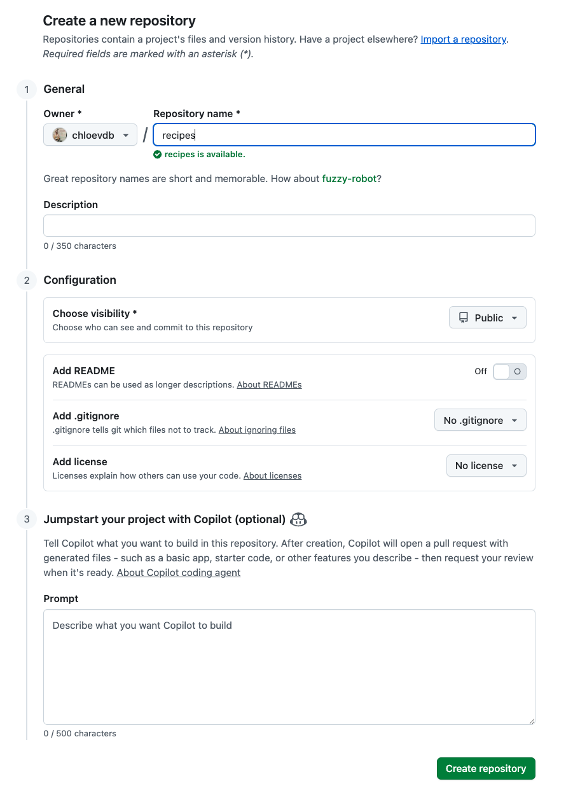
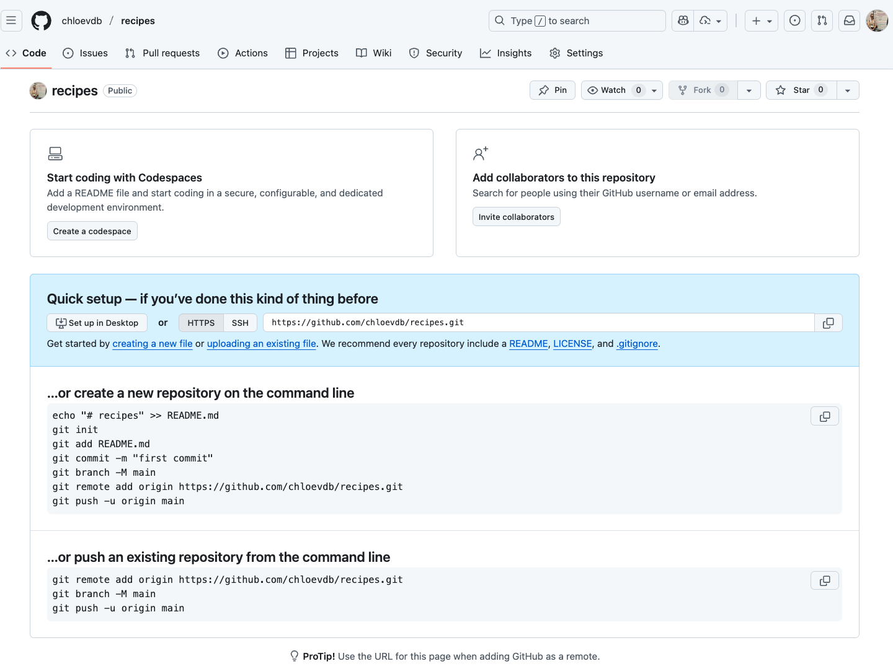
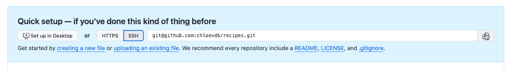
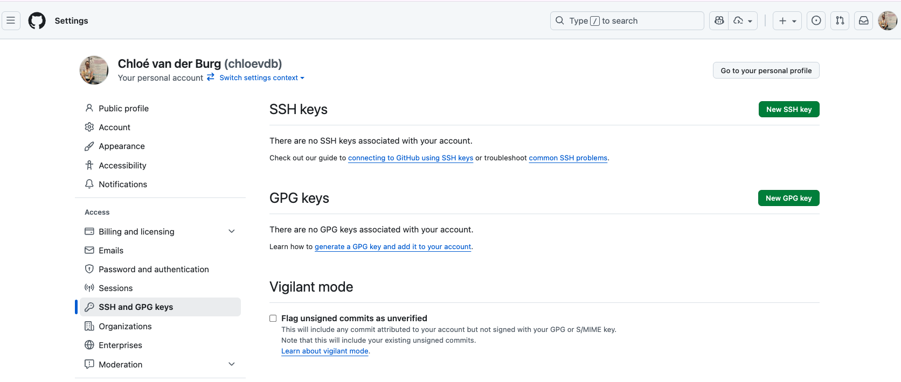
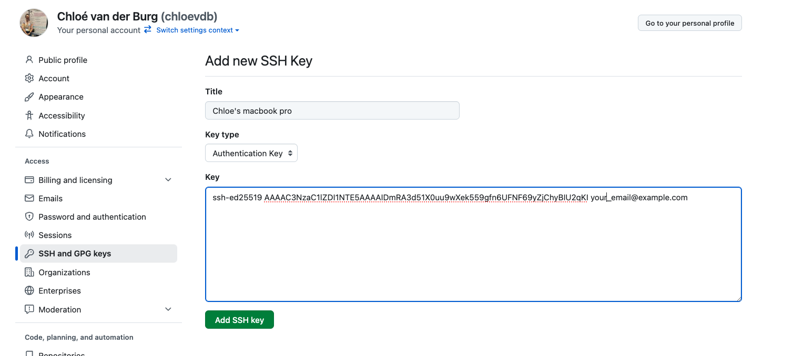

Pushing local changes to GitHub
Now that we have added and committed our changes, we need to push the changes from our local computer, on to the Github server.
First, we need to set up the remote repository on Github which is linked to our local repository.
1. Create a remote repository
Log in to GitHub, then click on the icon in the top right corner to create a new repository called recipes:

Name your repository “recipes” and then click “Create Repository”.
Note: Since this repository will be connected to a local repository, it needs to be empty. Leave “Initialize this repository with a README” unchecked, and keep “None” as options for both “Add .gitignore” and “Add a license.”

As soon as the repository is created, GitHub displays a page with a URL and some information on how to configure your local repository:

2. Connect local to remote repository
Now we connect the two repositories. We do this by making the GitHub repository a remote for the local repository. The home page of the repository on GitHub includes the URL string we need to identify it.
Click on the ‘SSH’ link to change the protocol from HTTPS to SSH and copy that URL from the browser.

Go into the local recipes repository, and run this command:
(Make sure to use the URL for your repository!)
git remote add origin <git@github.com:username/recipes.git>Hint: don’t type the <> around the URL.
We can check that the command has worked by running git remote -v:
git remote -vorigin git@github.com:githubusername/recipes.git (fetch)
origin git@github.com:githubusername/recipes.git (push)3. SSH setup and key pair (do this once per local machine)
Before you can connect to a remote repository, you need to set up a way for your computer to authenticate with GitHub so it knows it’s you trying to connect to your remote repository.
We are going to set up the method that is commonly used by many different services to authenticate access on the command line. This method is called Secure Shell Protocol (SSH). SSH is a cryptographic network protocol that allows secure communication between computers using an otherwise insecure network.
SSH uses what is called a key pair. This is two keys that work together to validate access. One key is publicly known and called the public key, and the other key called the private key is kept private. Very descriptive names.
You can think of the public key as a padlock, and only you have the key (the private key) to open it. You use the public key where you want a secure method of communication, such as your GitHub account. You give this padlock, or public key, to GitHub and say “lock the communications to my account with this so that only computers that have my private key can unlock communications and send git commands as my GitHub account.”
What we will do now is the minimum required to set up the SSH keys and add the public key to a GitHub account.
The first thing we are going to do is check if this has already been done on the computer you’re on. Because generally speaking, this setup only needs to happen once and then you can forget about it.
We will run the list command to check what key pairs already exist on your computer.
ls -al ~/.sshYour output is going to look a little different depending on whether or not SSH has ever been set up on the computer you are using.
If you have not set up SSH before on your computer, you will get an output something like this:
ls: cannot access '/c/Users/username/.ssh': No such file or directoryIf SSH has been set up on the computer you’re using, the public and private key pairs will be listed. The file names are either id_ed25519/id_ed25519.pub or id_rsa/id_rsa.pub depending on how the key pairs were set up.
If you have set up SSH before on your computer, you will get an output something like this:
drwxr-xr-x 1 Username 197121 0 Jul 16 14:48 ./
drwxr-xr-x 1 Username 197121 0 Jul 16 14:48 ../
-rw-------@ 1 Username staff 467 Sep 25 16:10 config3.1 Create an SSH key pair
To create an SSH key pair, use this command, where the -t option specifies which type of algorithm to use and -C attaches a comment to the key (here, use your email):
ssh-keygen -t ed25519 -C "your_email@example.com"If you are using a legacy system that doesn’t support the Ed25519 algorithm, use: $ ssh-keygen -t rsa -b 4096 -C "your_email@example.com"
Generating public/private ed25519 key pair.
Enter file in which to save the key (/Users/username/.ssh/id_ed25519):We want to use the default file, so just press Enter.
Enter passphrase (empty for no passphrase): Be sure to use something memorable or write down your passphrase somewhere, as there is no “reset my password” option. Note that, when typing a passphrase on a terminal, there won’t be any visual feedback of your typing. This is normal: your passphrase will be recorded even if you see nothing changing on your screen.
A passphrase is a phrase of four or more random unrelated words, generally a length of at least 15 characters. You can also include upper/lowercase and numbers/symbols to make it more secure.
Some examples are:
purpleduck!potatoboat
redhou5eSkytrain
sl33pfreeHardidea
Enter same passphrase again:After entering the same passphrase a second time, we receive the confirmation:
Your identification has been saved in /Users/username/.ssh/id_ed25519
Your public key has been saved in /Users/username/.ssh/id_ed25519.pub
The key fingerprint is:
SHA256:SMSPIStNyA00KPxuYu94KpZgRAYjgt9g4BA4kFy3g1o your_email@example.com
The key's randomart image is:
+--[ED25519 256]--+
|^B== o. |
|%*=.*.+ |
|+=.E =.+ |
| .=.+.o.. |
|.... . S |
|.+ o |
|+ = |
|.o.o |
|oo+. |
+----[SHA256]-----+The “identification” is actually the private key. You should never share it. The public key is appropriately named. The “key fingerprint” is a shorter version of a public key.
Now that we have generated the SSH keys, we will find the SSH files when we check.
ls -al ~/.sshdrwxr-xr-x 1 username 197121 0 Jul 16 14:48 ./
drwxr-xr-x 1 username 197121 0 Jul 16 14:48 ../
-rw-r--r-- 1 username 197121 419 Jul 16 14:48 id_ed25519
-rw-r--r-- 1 username 197121 106 Jul 16 14:48 id_ed25519.pub3.2 Copy the public key to GitHub
First, we need to copy the public key. Be sure to include the .pub at the end, otherwise you’re looking at the private key.
cat ~/.ssh/id_ed25519.pubNow, going to GitHub.com, click on your profile icon in the top right corner to get the drop-down menu. Click “Settings”, then on the settings page, click “SSH and GPG keys”, on the left side “Access” menu. Click the “New SSH key” button on the right side.

Now, you can add the title (Use a title such as “My macbook pro laptop” so you can remember where the original key pair files are located), paste your SSH key into the field, and click the “Add SSH key” to complete the setup.

Now we have a SSH key pair and we can run this command to check if GitHub can read our authentication.
ssh -T git@github.comHi username! You've successfully authenticated, but GitHub does not provide shell access.If you see a message like this:
The authenticity of host 'github.com (4.237.22.38)' can't be established.
ED25519 key fingerprint is SHA256:SOME-KEY-ID
This key is not known by any other names.
Are you sure you want to continue connecting (yes/no/[fingerprint])?Type yes
Then, you’ll see a message like this, and it will ask for your passphrase:
Warning: Permanently added 'github.com' (ED25519) to the list of known hosts.
Enter passphrase for key '/Users/username/.ssh/id_ed25519': Enter your passphrase, then you should get a success message:
Good! This output confirms that the SSH key works as intended. We are now ready to push our work to the remote repository.
Note: Once you have set up your SSH key on your local computer, you won’t have to do all this (i.e., section 3) again next time you make a new repository.
4. Push local changes to a remote
Now that authentication is setup, we can return to the remote. This command will push the changes from our local repository to the repository on GitHub:
git push origin mainSince we set up a passphrase, it will prompt us for it every time we push or pull. This is more secure, but can be a nuisance.
Remove the passphrase entirely:
ssh-keygen -p -f ~/.ssh/id_ed25519It will ask:
- Enter old passphrase: (type your current one)
- Enter new passphrase (empty for no passphrase): just press Enter
- Enter same passphrase again: press Enter
This rewrites the key without a passphrase.
Avoid typing it
On macOS, you can set up an SSH agent and store the passphrase in the macOS keychain, so you don’t have to type it every time you push and pull.
- Start the agent
eval "$(ssh-agent -s)"- Add your key and store the passphrase in the macOS Keychain:
ssh-add --apple-use-keychain ~/.ssh/id_ed25519(replace id_ed25519 with your key filename if different)
- Tell SSH to always use the Keychain. Add this to
~/.ssh/config(create the file if it doesn’t exist):
Host github.com
AddKeysToAgent yes
UseKeychain yes
IdentityFile ~/.ssh/id_ed25519After pushing, we should see something like this:
Enumerating objects: 16, done.
Counting objects: 100% (16/16), done.
Delta compression using up to 8 threads.
Compressing objects: 100% (11/11), done.
Writing objects: 100% (16/16), 1.45 KiB | 372.00 KiB/s, done.
Total 16 (delta 2), reused 0 (delta 0)
remote: Resolving deltas: 100% (2/2), done.
To https://github.com/username/recipes.git
* [new branch] main -> mainNow go to your github and have a look - your new recipe repository with the guacamole.qmd file should be online!